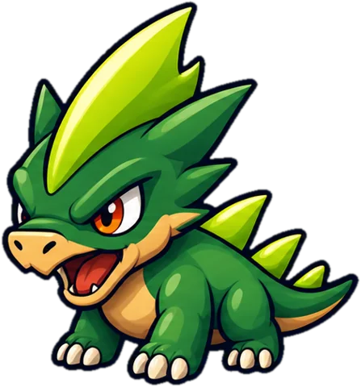

 GrassDragon
GrassDragonTap a stage to read its story.
Cornyx is a compact, upright dino-lizard with vivid green scales edged in yellow-lime and a row of short leaf-shaped spines running from its crown to its tail. Its arms are small but its hind legs are thick and powerful, and it stands with its tiny hands balled at its sides as if ready for anything. In Lava Crater it forages along the cooler grassy ledges above the heat-vents, nibbling at the heat-resistant herb-songs that grow only here. Every herb it eats seems to give it a new sound to practice.
Field note: Cornyx gains one new vocalization per herb variety it eats - researchers have catalogued 38 distinct sounds from a single well-fed individual.
Lava Crater. Cornyx and its family are found in the Lava Crater. See everyone who lives there.
Share a Bond Food that matches its types to become friends. Cornyx loves:
A Bond Food is not a trick. It joins your spirit with the Kimuro's spirit, and only when it chooses you.
Print the Kimuro adventure packs: mazes, cards, a board game and Bond Mark medals.
See the printable packs